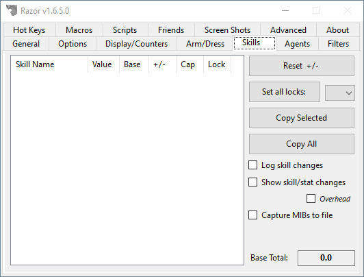

Skills
The Skills tab gives you general information about your skills.

Skill Table
- Skill Name
- This will list every skill in the game.
- Value
- This is your skill level before stat modifiers are applied.
- Base
- Your skill level with stat modifiers applied. Also known as the 'Show Real' skill level. Use these numbers when calculating skill caps.
- +/-
- This column shows any change in skill level since you logged in, or used the reset button.
- Cap
- The skill cap for each skill.
- Lock
- The lock setting for each skill.
'D'for down,'U'for up, and'L'for a locked skill.
- The lock setting for each skill.
Other
- Reset +/-
- Resets all +/- column entries in the skill table to 0.0
- Set all locks
- Set the locks for all skills according to your selection from the drop-down tab.
- Copy Selected
- Copies the skill information from the selected skills to the clipboard. Click a skill to highlight it. For multiple skill selection, hold the control key and click all skills to be copied.
- Copy All
- As above, all skills are automatically selected with this tab.
- Display Changes
- When checked, Razor will inform you of each skill level change, the change amount and the total change since the last +/- reset.
- Log skill changes
- All your skill changes will be logged and timestamp into a
.csvfile in your Razor folder.
- All your skill changes will be logged and timestamp into a
- Base Total
- Displays your character's total base skill level.